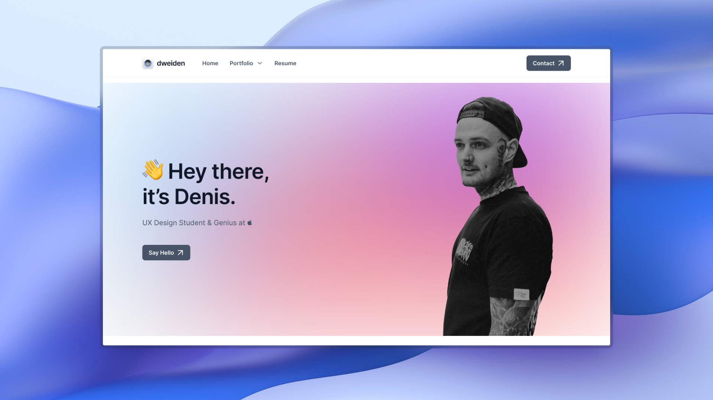

Introduction
Creating a portfolio website is an important step for any professional or aspiring developer to showcase themselves and their work online. It is a place where potential clients or employers can learn about skills, experiences, and projects. When implementing such a website, various factors need to be considered, such as design, navigation, and technical implementation. The goal of this project was to create a portfolio website that takes all of these important aspects into account and provides a professional presentation of the work.
To implement the portfolio website with different breakpoints, I went through a design process in Figma. I analyzed the requirements for the website, created the desktop design, set breakpoints, and adapted the design for the different breakpoints. This process ensured that my website is optimally displayed on any device.
Software and tools
Various tools and software were used to implement the portfolio website. Visual Studio Code was used as the code editor, which offers many useful features for web development. The Tailwind CSS framework was used to create a custom design quickly and effectively. Figma was a useful tool for designing the website, and Git allowed for efficient management of code changes and integration of changes from other developers. Using these tools, the portfolio website was implemented quickly and effectively.
Conclusion
The implementation of a portfolio website requires careful consideration of various factors, such as design, navigation, and technical implementation. The use of tools such as Visual Studio Code, the Tailwind CSS Framework, Figma, and Git can greatly facilitate the process. When designing a website with different breakpoints, it is important to analyze the requirements, create a style guide, design for the desktop, set breakpoints, and adapt the design for each breakpoint. By following this process, a professional and user-friendly portfolio website can be created that showcases the developer's skills, experiences, and projects effectively.